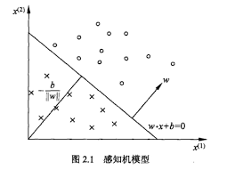
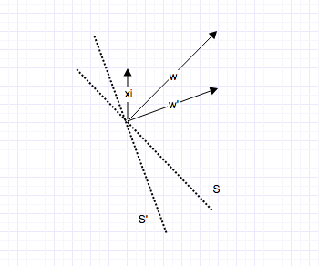

感知机是二分类的线性分类模型。
模型：感知机对应于将输入空间(特征空间)中的实例划分为正负两类的分离超平面，属于判别模型。
策略：基于误分类的损失函数
算法：利用梯度下降法对损失函数进行极小化。
感知机学习算法分为原始形式和对偶形式。
感知机于1957年Rosenblatt提出，是神经网络与支持向量机的基础。
本章首先介绍感知机模型；然后叙述感知机的学习策略，特别是损失函数；最后介绍感知机学习算法，包括原始形式和对偶形式，并证明算法的收敛性。
2.1感知机模型
定义2.1(感知机)：假设输入空间(特征空间)是$$\mathcal{X} \subseteq R^n$$，输出空间是$$\mathcal{Y} = {-1,+1}$$。输入$$x \in \mathcal{X}$$表示实例的特征向量，对应于输入空间(特征空间)的点；输出$$y \in \mathcal{Y}$$表示实例的类别。由输入空间到输出空间的如下函数：
$$
f(x) = \mathrm{sign}(w.x+b) \ (2.1)
$$
称为感知机。其中，w和b为感知机模型参数，$$w \in R^n$$叫做权值(weight)或权值向量(weight vector)，$$b\in R$$叫做偏置(bias),w.x表示w和x的内积，sign是符号函数，即：
$$
\mathrm{sign}(x) = \left{\begin{aligned}&+1, x\ge 0\ &-1, x<0 \end{aligned}\right. \ (2.2)
$$
感知机模型的假设空间是定义在特征空间中的所有线性分类模型或线性分类器，即函数集合{f|f(x)=w.x+b}。
2.1.1感知机的几何意义
线性方程
$$
w.x+b=0 \ (2.3)
$$
对应于特征空间$$R^n$$中的一个超平面S，其中w是超平面的法向量，b是超平面的截距。这个超平面将特征空间划分为两个部分。位于两个部分的点(特征向量)分别被分为正、负两类。因此，超平面S称为分离超平面。

2.2感知机学习策略
2.2.1数据集的线性可分性
定义2.2(数据集的线性可分性)：给定一个数据集
$$
T = {(x_1,y_1),(x_2,y_2),…,(x_N,y_N)}
$$
其中，$$x_i \in \mathcal{X}=R^n$$,$$y_i\in \mathcal{Y}={-1,+1}$$，i=1,2,…,N，如果存在某个超平面S：
$$
w.x+b=0
$$
能够将数据集的正实例点和负实例点完全正确的划分到超平面的两侧，即对所有$$y_i=+1$$的实例i，有$$w.x_i+b>0$$，对所有$$y_i=-1$$的实例i，有$$w.x_i+b<0$$。则称数据集T为线性可分数据集；否则，称数据集T线性不可分。
2.2.2感知机学习策略
为了找出感知机模型对应的超平面，需要确定一个学习策略，即定义(经验)损失函数并将损失函数极小化。
损失函数的一个自然选择是误分类点的总数。但是，这样的损失函数不是参数w，b的连续可导函数，不易优化。损失函数的另一个选择是误分类点到超平面S的总距离，这是感知机所采用的。
首先，写出输入空间$$R^n$$中任一点$$x_0$$到超平面S的距离：
$$
\frac{1}{|w|} |w.x_0+b|
$$
这里，$$|w|$$是w的L2范数。
其次，对于误分类的数据$$(x_i,y_i)$$来说，
$$
-y_i(w.x_i+b) > 0
$$
成立。因为当$$w.x_i+b>0$$时，$$y_i=-1$$，而当$$w.x_i+b<0$$时，$$y_i=+1$$。因此，误分类点$$x_i$$到超平面S的距离是:
$$
-\frac{1}{|w|}y_i(w.x_i+b)
$$
这样，假设超平面S的误分类点集合为M，那么所有误分类点到超平面S的总距离为:
$$
-\frac{1}{|w|}\sum_{x_i\in M}y_i(w.x_i+b)
$$
不考虑$\frac{1}{|w|}$，那就得到感知机学习的损失函数。
给定训练数据集
$$
T = {(x_1,y_1),(x_2,y_2),…,(x_N,y_N)}
$$
其中，$$x_i \in \mathcal{X}=R^n$$，$$y_i \in \mathcal{Y}={-1,+1}$$，i=1,2,…,N。感知机sign(w.x+b)学习的损失函数定义为:
$$
L(w,b) = -\sum_{x_i \in M}y_i(w.x_i+b) \ (2.4)
$$
其中M为误分类的集合。这个损失函数就是感知机学习的经验风险系数。
显然，损失函数L(w,b)是非负的。如果没有误分类点，损失函数值是0。而且，误分类点越少，误分类点离超平面越近，损失函数值就越小。
一个特定的样本点的损失函数：在误分类时时参数w，b的线性函数，在正确分类时时0。因此，给定训练数据集T，损失函数L(w,b)是w，b的连续可导函数。
感知机学习的策略是在假设空间中选取使损失函数式(2.4)最小的模型参数w,b,即感知机模型。
2.3感知机学习算法
最优化的方法是随机梯度下降法。本节叙述感知机学习的具体算法，包括原始形式和对偶形式，并证明在训练数据线性可分条件下感知机学习算法的收敛性。
2.3.1感知机学习算法的原始形式
给定一个训练数据集
$$
T = {(x_1,y_1),(x_2,y_2),…,(x_N,y_N)}
$$
其中，$$x_i \in \mathcal{X}=R^n$$，$$y_i \in \mathcal{Y}={-1,+1}$$，i=1,2,…,N。求参数w，b，使其为一下损失函数极小化问题的解：
$$
\min_{w,b} L(w,b) = -\sum_{x_i\in M}y_i(w.x_i+b) \ (2.5)
$$
其中M为误分类点的集合。
感知机学习算法是误分类驱动的。具体采用随机梯度下降法：
首先，任意选取一个超平面$$w_0,b_0$$，然后用梯度下降法不断极小化目标函数(2.5)。极小化过程中不是一次使M中所有误分类点的梯度下降，而是一次随机选取一个误分类点使其梯度下降。
假设误分类点集合M是固定的，那么损失函数L(w,b)的梯度由：
$$
\nabla_wL(w,b)=-\sum_{x_i \in M}y_ix_i
$$
$$
\nabla_b L(w,b) = -\sum_{x_i \in M}y_i
$$
给出。
随机选取一个误分类点$$(x_i,y_i)$$，对w，b进行更新:
$$
w \leftarrow w+\eta y_ix_i \ (2.6)
$$
$$
b \leftarrow b+\eta y_i \ (2.7)
$$
式中$$\eta(0<\eta \le 1)$$是步长，也称为学习率(learning rate)。通过迭代可以期待损失函数L(w,b)不断减小，直到为0.
综上所述，得到如下算法：
算法2.1(感知机学习算法的原始形式)
输入:训练数据集$$T = {(x_1,y_1),(x_2,y_2),…,(x_N,y_N)}$$，其中$$x_i \in \mathcal{X}=R^n$$，$$y_i \in \mathcal{Y}={-1,+1}$$，i=1,2,…,N。学习率$$\eta(0<\eta \le 1)$$;
输出:w,b;感知机模型sign(w.x+b)
选取初值w0，b0
在训练集中随机选取选取数据$$(x_i,y_i)$$
如果$$y_i(w.x_i+b) \le 0$$,注意：这里条件包含了等于0的情况
$$
w \leftarrow w+\eta y_ix_i \ (2.6)
$$$$
b \leftarrow b+\eta y_i \ (2.7)
$$
- 转置2，直至训练集中没有误分类点。
以上学习算法直观上有如下解释：
当一个实例点被误分类，即位于分离超平面的错误一面时，则调整w，b的值，使分离超平面向该误分类点的一侧移动，以减少该误分类点与超平面间的距离，直至超平面越过该误分类点使其被正确分类。
如下图所示:xi为误分类点，S为原分离超平面，w为S的法向量，S’为使用xi更新后的分离超平面，w’=w+$$\eta$$yixi为S‘的法向量。从图中可以很直观的看到xi离S’的距离更近了。

注意：感知机学习算法由于采用不同的初值或选取不同的误分类点，解可以不同。（解不唯一）
1 | class perceptron(object): |
2.3.2算法的收敛性
令$$\hat{w}=(w^{\top},b)^{\top}$$,$$\hat{x}=(x^{\top},1)^{\top}$$。这样，$$\hat{x} \in R^{n+1},\hat{w}\in R^{n+1}$$。显然，$$\hat{w}.\hat{x}=w.x+b$$。
定理2.1(Novikoff) 假设训练数据集$$T = {(x_1,y_1),(x_2,y_2),…,(x_N,y_N)}$$是线性可分的，其中$$x_i \in \mathcal{X}=R^n$$，$$y_i \in \mathcal{Y}={-1,+1}$$，i=1,2,…,N。则
存在满足条件$$|\hat{w}{opt}|$$=1的超平面使得$$\hat{w}{opt}.\hat{x}=w_{opt}.x+b_{opt}=0$$将训练数据集完全正确分开；且存在$\gamma>0$,对所有i=1,2,…,N(被正确分类的样本点)：
$$
y_i(\hat{w}{opt}.\hat{x_i})=y_i(w{opt}.x_i+b_{opt}) \ge \gamma \ (2.8)
$$令$$R=\max_{1\le i \le N}|\hat{x_i}|$$，则感知机算法2.1在训练数据集上的误分类次数k满足不等式：
$$
k \le \left(\frac{R}{\gamma}\right)^2 \ (2.9)
$$
证明：
由于训练数据集是线性可分的，按照定义2.2，存在超平面可将训练数据集完全正确分开，取此超平面为$$\hat{w}{opt}.\hat{x}=w{opt}.x+b_{opt}=0$$，使$$|\hat{w}{opt}|$$=1。由于对有限的i=1,2,…,N，均有
$$
y_i(\hat{w}{opt}.\hat{x_i})=y_i(w_{opt}.x_i+b_{opt}) > 0
$$
所以存在：
$$
\gamma = \min_i {y_i(w_{opt}.x_i+b_{opt})}
$$
使$$y_i(\hat{w}{opt}.\hat{x_i})=y_i(w{opt}.x_i+b_{opt}) \ge \gamma$$。感知机算法从$$\hat{w}0=0$$开始，如果实例被误分类，则更新权重。令$$\hat{w}{k-1}$$是第k个误分类实例之前的扩充权重向量，即$$\hat{w}{k-1}=(w^{\top}{k-1},b_{k-1})^{\top}$$。
则第k个误分类实例的条件是:
$$
y_i(\hat{w}{k-1}.\hat{x_i})=y_i(w{k-1}.x_i+b_{k-1}) \le 0 \ (2.10)
$$
若$$(x_i,y_i)$$是被$$\hat{w}{k-1}=(w^{\top}{k-1},b_{k-1})^{\top}$$误分类的数据，则w和b的更新是:
$$
w_k \leftarrow w_{k-1}+\eta y_ix_i
$$$$
b_k \leftarrow b_{k-1}+\eta y_i
$$
即：
$$
\hat{w}k \leftarrow \hat{w}{k-1}+\eta y_ix_i \ (2.11)
$$
下面推导两个不等式：
1.
$$
\hat{w}k \hat{w}{opt} \ge k\eta\gamma \ (2.12)
$$
由式(2.11)及式(2.8)得：
$$
\begin{aligned}\hat{w}k.\hat{w}{opt} &= \hat{w}{k-1}.\hat{w}{opt}+\eta y_i \hat{w}{opt}.\hat{x}_i \ &\ge \hat{w}{k-1}.\hat{w}_{opt}+\eta\gamma \end{aligned}
$$
由此递推即得不等式(2.12)：
$$
\hat{w}k.\hat{w}{opt} \ge \hat{w}{k-1}.\hat{w}{opt}+\eta\gamma \ge \hat{w}{k-2}.\hat{w}{opt}+2\eta\gamma\ge … \ge k\eta\gamma
$$
2.
$$
|\hat{w}_k|^2 \le k\eta^2R^2 \ (2.13)
$$
由式(2.11)及式(2.10)得
$$
\begin{aligned} |\hat{w}k|^2 &= |\hat{w}{k-1}|^2+2\eta y_i \hat{w}{k-1}.\hat{x}_i+\eta^2|\hat{x}_i|^2 \ &\le |\hat{w}{k-1}|^2+\eta^2|\hat{x}i|^2\ &\le |\hat{w}{k-1}|^2+\eta^2R^2 \ &\le |\hat{w}_{k-2}|^2+2\eta^2R^2 \
&\le…\ &\le k\eta^2R^2 \end{aligned}
$$
结合不等式(2.12)及式(2.13)即得:
$$
k\eta\gamma \le \hat{w}k.\hat{w}{opt} \le |\hat{w}k||\hat{w}{opt}| \le \sqrt{k}\eta R
$$
$$
k^2\gamma^2 \le kR^2
$$
于是：$$k\le \left(\frac{R}{\gamma}\right)^2$$
定理证明，误分类的次数k是有上界的。经过有限次搜索(搜索次数由误分类次数决定)可以找到将训练数据完全正确分开的分离超平面。也就是说，当训练数据集线性可分时，感知机学习算法原始形式迭代是收敛的。
当训练集线性不可分时，感知机学习算法不收敛，迭代结果会发生震荡。
2.3.3感知机学习算法的对偶形式
对偶形式的基本想法是：将w和b表示为实例$x_i$和标记$y_i$的线性组合的形式，通过求解其系数而求得w和b。
不失一般性，在算法2.1中，令w0,b0初始化为0。对误分类点$$(x_i,y_i)$$通过：
$$
w \leftarrow w+\eta y_ix_i
$$
$$
\leftarrow b+\eta y_i
$$
逐步修改w，b，设修改n次，则w，b关于$$(x_i,y_i)$$的增量分别是$$\alpha_iy_ix_i$$和$$\alpha_iy_i$$，这里$$\alpha_i=n_i\eta$$。这样，从学习过程不难看出，最后学习到的w,b可以分别表示为:
$$
w = \sum_{i=1}^N \alpha_i y_i x_i \ (2.14)
$$
$$
b=\sum_{i=1}^N \alpha_iy_i \ (2.15)
$$
这里$$\alpha_i\ge 0$$,i=1,2,…,N，当$$\eta=1$$时，表示第i个实例点由于误分而进行更新的次数。实例点更新次数越多，意味着它距离分离超平面越近，也就越难正确分类，换句话来说，这样的实例对学习结果影响最大。
算法2.2(感知机学习算法的对偶形式)
输入：线性可分的数据集$$T = {(x_1,y_1),(x_2,y_2),…,(x_N,y_N)}$$，其中$$x_i \in \mathcal{X}=R^n$$，$$y_i \in \mathcal{Y}={-1,+1}$$，i=1,2,…,N，学习率$$\eta(0<\eta \le1)$$；
输出：$$\alpha$$,b;感知机模型$$f(x)=\mathrm{sign}\left(\sum_{j=1}^N \alpha_jy_jx_j.x+b \right)$$.其中$$\alpha=(\alpha_1,\alpha_2,…,\alpha_N)^{\top}$$。
$$\alpha \leftarrow 0$$,$$b \leftarrow 0$$
在训练集中选取数据$$(x_i,y_i)$$
如果$$y_i \left( \sum_{j=1}^N \alpha_jy_jx_j.x_i+b \right) \le 0$$
$$
\alpha_i \leftarrow \alpha_i+\eta
$$$$
b \leftarrow b+ \eta y_i
$$转至2直到没有误分类数据。
对偶形式中训练实例仅以内积的形式出现。
为了方便，预先将训练集中实例间的内积计算出来并以矩阵的形式存储，这个矩阵就是所谓的Gram矩阵：
$$
G = [x_i.x_j]_{N\times N}
$$
1 | class myperceptron(): |
2.4 扩展(核感知器)
核感知器可用于求解数据集为非线性可分的情况。核感知器由感知器的对偶形式延伸而来，决策函数表示为:
$$
y = \mathrm{sign} \sum_{i=0}^N \alpha_i y_i K(X_i,X’)
$$
其中，X’为新实例(向量)，K为核函数$$K(X,X’)=\Phi(X).\Phi(X’)$$,$$\Phi$$函数相当于输入空间到特征空间的映射，此处的特征空间与输入空间是不等价的，它通常比输入空间具有更高的维度。
上述决策函数的形式演变推导:
$$
\begin{aligned}y&=\mathrm{sign}(W^{\top}X) \ &=\mathrm{sign}\left(\sum_{i=1}^N \alpha_i y_i X_i\right)^{\top} X \ &= \mathrm{sign}\sum_{i=0}^N \alpha_i y_i (X_i.X) \ &= \mathrm{sign} \sum_{i=0}^N \alpha_i y_i K(X_i,X’)\end{aligned}
$$
1 | import numpy as np |
更多关于核函数的知识在SVM算法中会涉及